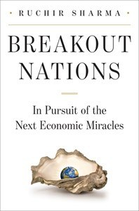

Library › Money & Finance
Breakout Nations: In Pursuit of the Next Economic Miracles — Summary & Key Lessons

Every boom makes a country look like a miracle. Sharma's rulebook separates the breakouts from the also-rans before the headlines do.
📖 OPEN THE FULL INTERACTIVE BREAKDOWN →🌐 Read it in Hindi, Hinglish, Gujarati, Tamil & 22 more languages — free, with audio.
💡 The Big Idea
Sharma, who ran one of the world's largest emerging-markets funds, argues that growth is not destiny: nations rarely stay on top for long, and the hot money narrative always lags the real cycle. Through country-by-country field reporting (Brazil's consumption binge, Russia's oil curse, China's credit march, India's media-hyped potential), he offers practical rules: watch credit growth, watch per-capita income levels where growth stalls, watch expensive capitals and luxury booms as danger signs. The lesson generalizes beyond nations to companies and portfolios: never extrapolate a boom.
🧠 The 8 Key Lessons
Lesson 1: The Law of Reversion: Growth Is Not a Regime
Why Leaders Don't Last
History shows fast-growing nations regress toward the mean within a decade; compounding at 8 to 10 percent for a generation is statistically freakish. Investors and commentators extrapolate recent growth into forever, overpricing today's winners. The discipline: treat any multi-year boom as borrowed future growth, and look for the constraints (labor, land, credit, politics) that will slow it.
📖 Example: In the 1960s experts projected Japan and the USSR to overtake the US by 1990; both faltered. In the 2010s the same language attached to China and the BRICs, with similar blind spots about debt, demographics and politics. Read the full example →
⚡ Do this: Take your fastest-growing market, company or asset and write down the two constraints most likely to slow it within five years. Price those in before the crowd sees them.
Lesson 2: Watch Credit, Not GDP Headlines
The Credit Bomb
Sharma's sharpest indicator: rapid credit growth predicts trouble better than GDP itself. Lending booms fund consumption and construction that feel like miracles, then correct painfully. Whether a nation, a sector or a startup, growth financed by fast-rising debt is borrowed, and the payback arrives with interest and blame.
📖 Example: Ireland and Spain pre-2008, Thailand in the 90s, and China's post-2008 local-government lending all showed credit growing far faster than the economy for years before their respective crises. Read the full example →
⚡ Do this: Track credit growth against GDP growth in any market you invest in, and against revenue growth in any company you build. Divergence above 5 points is a siren.
Lesson 3: The Luxury and Capital Tell
Champagne Bubbles First
Boom-fatigue signals: luxury goods outgrowing the economy, cramped and expensive capital cities, speculative property, a newly ostentatious elite. When a country's wealthiest start visibly outspending its growth, the distribution is fraying and politics will eventually bite. The same tells work for companies: when the founders' lifestyle grows faster than the moat, short the story.
📖 Example: Sharma notes Mumbai and Moscow luxury booms in 2007 and 2012 as warning lights; within years both economies stumbled politically and economically, exactly as the internal-inequality signal predicted. Read the full example →
⚡ Do this: In any boom you participate in, watch what the winners are buying. When the narrative is champagne, tighten your own underwriting.
Lesson 4: Per-Capita Ceilings: The Middle-Income Wall
Where Growth Runs Out
Countries grow fastest at low income (catch-up manufacturing, urbanization) and stall in a middle-income band where cheap labor advantages expire and innovation must take over. Only a handful (Korea, Taiwan) broke through. The same curve applies to companies: the playbook that wins your first million customers actively fails at the next ten million.
📖 Example: Malaysia and Thailand stalled near the middle-income wall for decades, while Korea pushed through with heavy investment in engineering and brands; the difference was deliberate capability upgrade, not luck. Read the full example →
⚡ Do this: Write down the capability your company must build to escape its current revenue band. Start it when times are good; walls do not schedule appointments.
Lesson 5: Politics Eats Economics
The Strongman Discount
Markets price leaders' promises at face value until suddenly they do not: reformers age, succession fractures, populism follows inequality. Sharma treats political cycle risk as central to country investing. For builders: regulatory and political appetite for your industry rotates; do not build a strategy that requires permanent political love.
📖 Example: Russia's post-2000 boom priced in stability, then petro-nationalism and sanctions reversed foreign capital for a decade; Brazil's Lula-era promise gave way to investigation and recession. Read the full example →
⚡ Do this: List the political assumptions your business plan requires (taxes, visas, platform rules). Build hedges or diversify so no single ruler's mood is load-bearing.
Lesson 6: India: Democracy's Noisy Compounding
The India Chapter
Sharma is sympathetic but unsentimental on India: gigantic potential throttled by infrastructure, bureaucracy and a fragmented politics that slows both booms and busts. India grows messily but rarely collapses; consumption and demographics provide a floor. The lesson: some assets compound quietly with high noise; do not confuse volatility with weakness, or stability with strength.
📖 Example: Despite headlines, India's consumption-heavy, low-export-dependence model cushioned global shocks; its growth rarely hit double digits but also avoided the deep crashes of export-leveraged peers. Read the full example →
⚡ Do this: Classify your assets and ventures by noise-versus-fragility. Hold noisy-but-durable things longer, and distrust quiet-but-leveraged ones most of all.
Lesson 7: Follow the Money Flows, Not the Storytellers
Capital Tide-Watching
Emerging-market booms ride global liquidity: when rich-world money is cheap, frontier stories inflate; when it turns, the same stories crash together. Sharma advises watching fund flows and dollar cycles rather than conferences. Companies dependent on external capital cycles should keep permanent reserves for the turn, which always arrives together for everyone.
📖 Example: The 2013 taper tantrum hit India, Indonesia, Brazil and Turkey simultaneously, the fragile five, not because their stories changed in one month but because the global tide did. Read the full example →
⚡ Do this: Know your funding tide: rate cycles, VC sentiment, credit spreads. Hold 12 to 18 months of runway precisely because tides, not fundamentals, decide financing windows.
Lesson 8: The Next Miracle Is Where Nobody Is Looking
Contrarian Maps
Because consensus overprices yesterday's miracles, the next breakout is usually unfashionable: smaller, duller, cheaper. Sharma hunts for countries with low expectations, improving politics and early credit deepening. The same contrarian map works for markets, sectors and careers: crowded excellence is overpriced; boring competence is cheap.
📖 Example: Sharma flags smaller Asian and African economies with modest expectations while crowds queue for the BRIC brand; several later outperformed the favorites on a risk-adjusted basis. Read the full example →
⚡ Do this: List the unfashionable corners of your industry with improving fundamentals. Allocate a small, patient bet there every year; that is where breakouts are bought.
✅ 5-Step Action Plan
- Extrapolate no boom: name two constraints that slow your hottest market within five years.
- Track credit growth against real growth everywhere you invest or operate.
- Watch the winners' luxury spending as an early warning system.
- Start the capability that escapes your current income or revenue band before you hit the wall.
- Hold reserves against capital-cycle turns; tides hit everyone in the same month.
⚠️ When This Doesn't Work
Written in 2012, so specific country calls (China's credit path, India's politics, commodity supercycle end) have partly played out and partly surprised; treat examples as historical demonstration, not current advice. Sharma's fund positioning shapes some emphasis. The rules age well; the country scoresheets are a snapshot.
💀 The Graveyard Proves It
🏗️ China Evergrande — The $300 Billion Property Empire That Drowned in Debt. Burn: $300B+ debt — the largest default in history. Read the full case study →
💬 Best Quotes from Breakout Nations: In Pursuit of the Next Economic Miracles
- “The logic of economics is that no place stays hot forever.”
- “When a boom is credited to culture, look for the credit bubble instead.”
- “The crowd arrives at the party exactly when the host starts worrying.”
Interactive version: mark lessons as read, listen in your language, share quote cards.